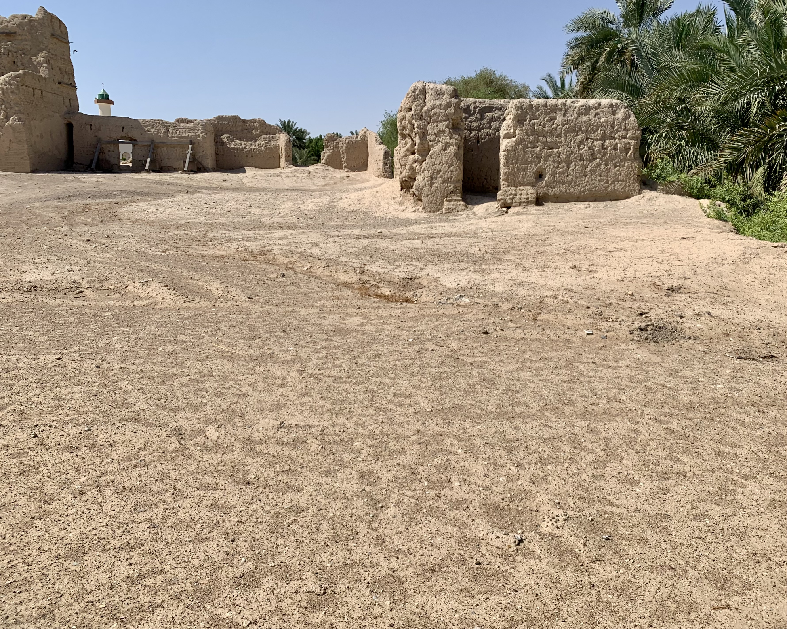
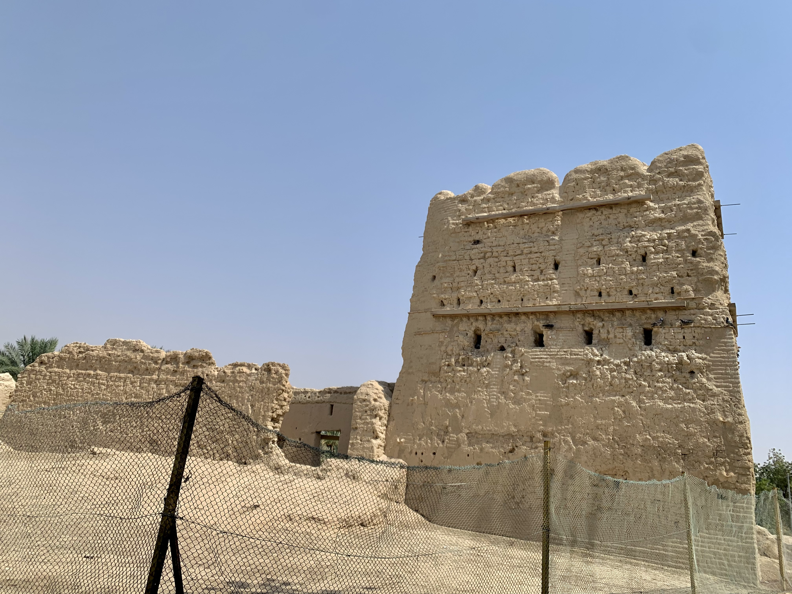
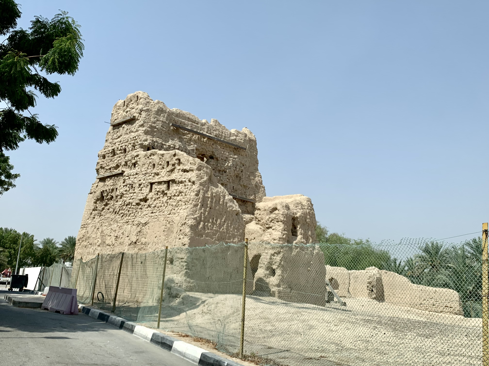

بيت عبدالله بن سالم الدرمكي شرق واحة القطارة، قرب حصن الشيخ سلطان الدرمكي. البيت هو البرج الكبير، بُني من الطوب الطيني في القرن السابع عشر، وقد بَلِيَت أجزاء من البيت لكن معالمه بقيت.
تقع قرب البيت عدة مبانٍ قديمة مبنية من الطوب الطيني، منها بقايا المسجد القديم التي ضُمَّت فيما بعد للمسجد الحديث الذي بُني عام 1985.
  